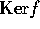
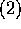

、 が成り立つことを言う。 なる条件を N が R の作用で閉じているとか安定であるとも言う。
、 が成り立つことを言う。 なる条件を N が R の作用で閉じているとか安定であるとも言う。
を満たす時を言う。 なる条件を、f は、R の作用と可換などとも言う。
なる条件を、f は、R の作用と可換などとも言う。
G を有限群、 、V を A-加群とする。 のとき とすると、、また、 は、群としての準同型である。逆に、群の準同型 が与えられると、V は、A 加群となる。
、V を A-加群とする。 のとき とすると、、また、 は、群としての準同型である。逆に、群の準同型 が与えられると、V は、A 加群となる。
M を R-加群とする。M が 0 と M 以外に部分加群を持たないとき、M を既約と言う。既約でないとき、可約と言う。
f を R-準同型とすると、、 は、共に R-部分加群である。
は、共に R-部分加群である。
 とすると、、 だから 、 となる。これは、f が同型写像であることを意味する。
とすると、、 だから 、 となる。これは、f が同型写像であることを意味する。
  より明か。
より明か。